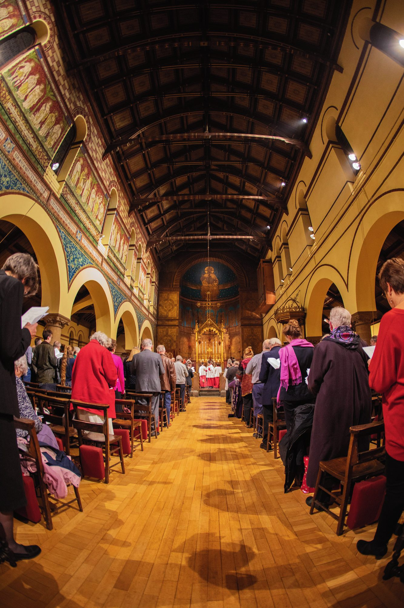

£660
per week
to stay open,
lit and warm
lit and warm
of Beauty, Encouragement and Compassion
“Praise him with stringed instruments and organs.” from Psalm 150
This autumn, our new organ comes into use, after seven years of fundraising, planning and prayer. St Barnabas Jericho will once again resound with joy.

Thank you to all who contributed in so many ways. It is a magnificent achievement — almost half a million pounds, raised by this parish and thanks to some grants and legacies, for something that will continue to inspire others for generations yet to come.
We have completed the organ.
Now let us continue to keep the Church open!
A daily church — not just a Sunday church
Every morning at 9.00am or earlier, the door of St Barnabas is unlocked and the Church stays open until 6.00pm or later. St Thomas the Martyr is open on Wednesday mornings. Pilgrims come. Tourists come. People who have not prayed in thirty years sit at the back and leave without speaking to anyone. Some ask questions. Everyone is so grateful for Church spaces such as ours.
Daily prayers, Daily Mass, chorister rehearsals, school visits, guided tours, heat and light for services: the cost of everything is paid for month by month, by the ordinary giving of our congregation and parishioners.
It costs…
We are…
We are not asking you to solve everything. We are asking you to further support something you already believe in. If you currently give £5 a week, could you increase that to £10? If you currently give £20 a month, could you increase that to £30? If you don’t yet give anything at all, might you consider setting up a standing order of, say, £20 per month, if you could afford it?
Figures only go so far. Ten people have written about what this church means to them — students, academics, former parishioners, a historian of Christianity, someone who only ever makes Tuesdays and Thursdays.
They write about the first time they came in, about being baptised and confirmed here, about great-grandparents in the choir, about a door unlocked as soon as lockdown ended, about finding a glorious basilica at the end of an ordinary street. If you would like to add yours, we would be glad to have it, and it need only be a few sentences.
The same form as the one in the printed leaflet — it takes about two minutes, and you can add Gift Aid as you go.
Fill in the response formThe simplest and most helpful way to give, because it lets us plan. Use these details in your own online banking — we cannot set this up for you.
| Account name | St Barnabas and St Paul PCC |
|---|---|
| Sort code | 54-21-23 |
| Account number | 08327017 |
| Reference | Your name |
Please still send us your response form, so that we know to thank you and can claim the Gift Aid.
These are our only bank details. If you ever receive a message that appears to come from the parish asking you to pay into a different account, please telephone the Parish Office before sending anything.
A single gift is very welcome, by bank transfer using the details above, or by cash or cheque in the offering plate. Cheques payable to St Barnabas and St Paul PCC.
A legacy costs nothing now and is the single most lasting gift anyone can make to this church. If you would like to talk it over, without any obligation, say so on the response form and we will be in touch quietly.
If you pay UK Income or Capital Gains Tax, Gift Aid adds 25p to every £1 you give, at no cost to you. There is a box to tick on the response form.
If you are returning a paper form, please bring it to church on Gift Sunday and place it in the collection plate. If you cannot be with us that day, bring it any Sunday before or after and hand it to a Churchwarden, or post it to the Vicarage: St Barnabas Vicarage, 15 St Barnabas Street, Oxford, OX2 6BG.